Qt
Qt是一个跨平台C++图形化应用程序开发工具，自带有Qt Creator可视化IDE编辑UI界面。当然Qt也可以用来开发非图形化界面，或者使用Qt里提供的如QString，QVector，QJsonDocument等方便的工具来开发你的其他C++应用。
Qt下载与安装
下载
官网安装qt需要注册账号，可以从Index of /archive/qt下载到不需要登录的安装工具。
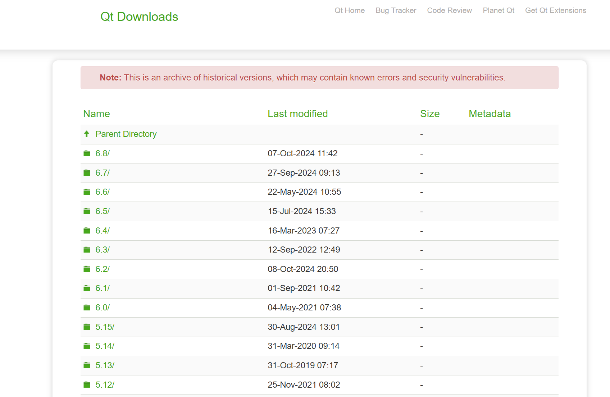
可以选择一个你想装的版本。如果你点进去后发现网页提示Download from your IP address is not allowed，这说明你需要翻一下墙再去查看。
正常进去后如下所示，windows就点.exe结尾的那个（我选择的是5.12.12）
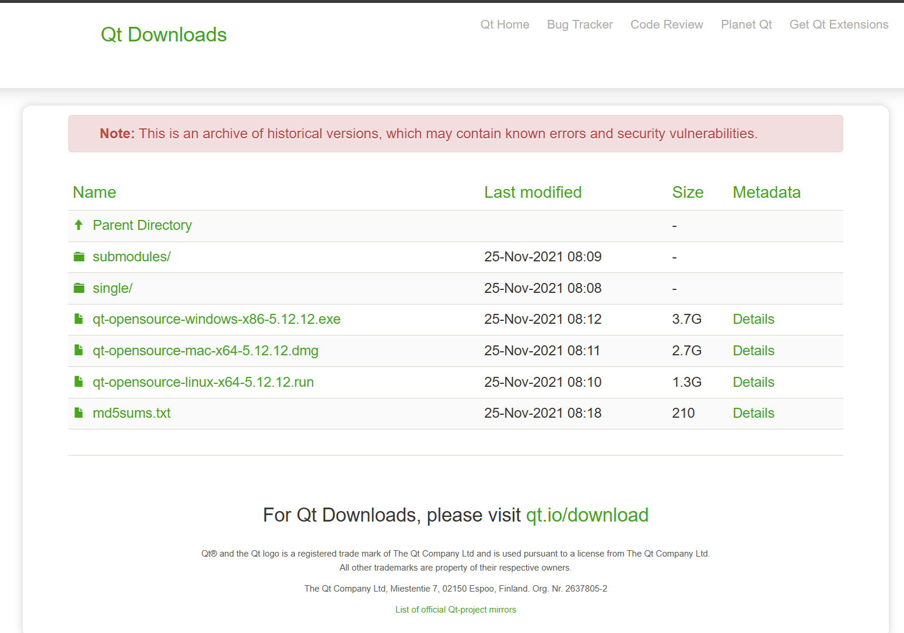
安装
打开安装程序前，需要把网络断掉，这样就会跳过注册登录的阶段。如果你忘记断网，那就断网后再次打开安装程序即可。
- 选择安装路径
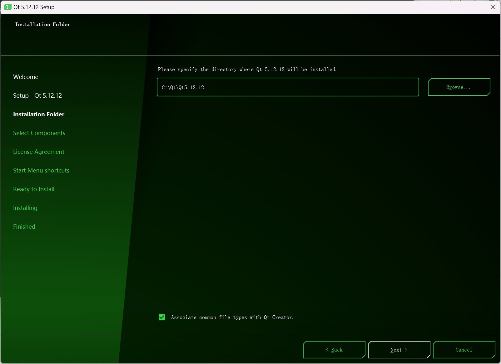
- 选择安装组件
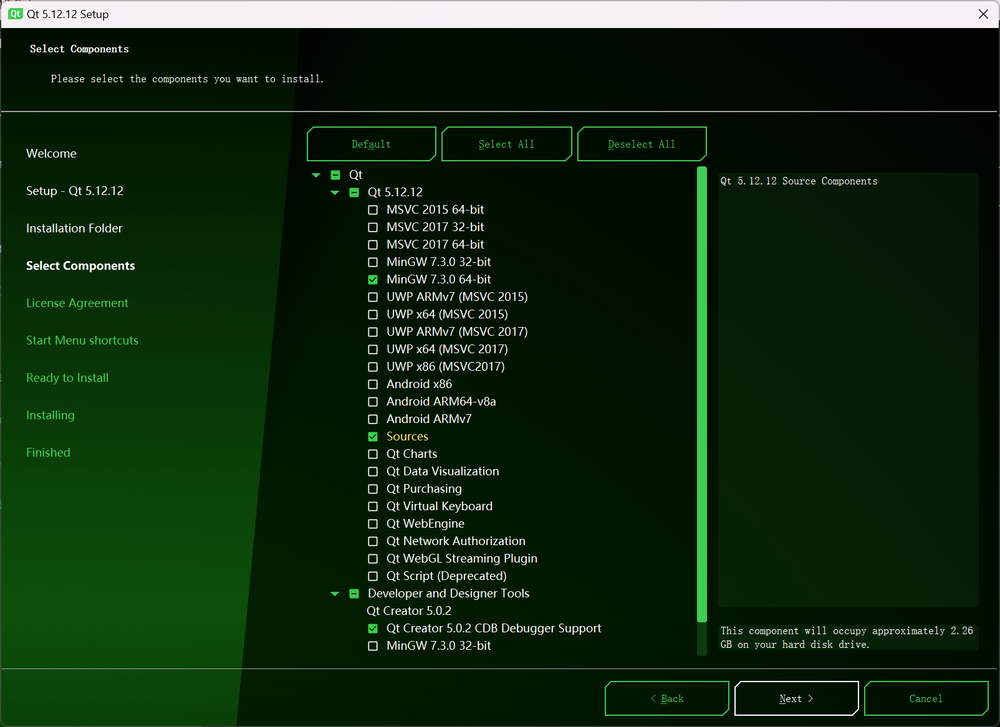
这里从MSVC - Android都是对应的编译工具。MSVC和UWP都是windows专用的编译工具，例如win10 win11通知栏的通知就是UWP下的接口；MinGW是windows/linux都能使用的编译工具（我选择这个）；Android就是安卓。
注意！
不同Qt版本需要使用特定版本的编译工具，否则编译后执行会报错！
其他的Qt组件根据你的需要来装即可，装的越多消耗磁盘空间当然也越多，可以按需安装。
接下来一路next即可
环境变量配置
环境变量就是一个操作系统级的变量，允许在任何目录下直接获得某个值（一般来说都是路径）。
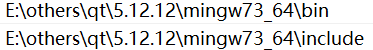
如图将第一行的bin和第二行的include对应路径配置到环境变量中（如果不会配置环境变量可参考Microsoft Windows 11 | 设置 | 环境变量 | 教学 - 知乎）。
请注意不要照抄路径，根据你实际的安装位置来确认，即在「安装」章节下的选择的安装路径。
编译器版本问题
不同qt版本可能依赖不同特定版本的编译器才能正常编译并执行可执行文件。例如这里的qt 5.12.12在安装选择时和这个文件夹名都显示了mingw73_64，意思是要求mingw 7.3版本64位编译器。如果你发现qt这个文件夹下为空，或者你之前安装过mingw编译器且配置了环境变量，那么大概率是无法编译后成功执行的。可能会报错：
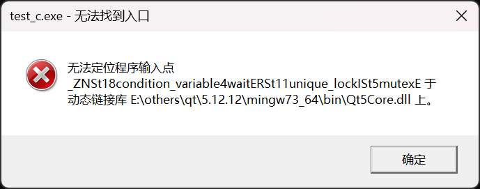
这就是编译器版本异常导致的。你可以主动去下载对应版本的编译器（[MinGW-w64 - for 32 and 64 bit Windows - Browse /Toolchains targetting Win64/Personal Builds/mingw-builds at SourceForge.net](https://sourceforge.net/projects/mingw-w64/files/Toolchains targetting Win64/Personal Builds/mingw-builds/)
例如我想要装mingw73_64:
- 打开7.3.0
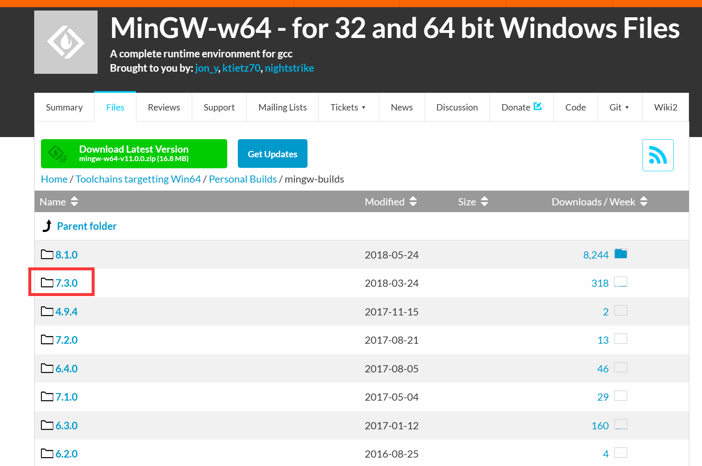
- 选择thread
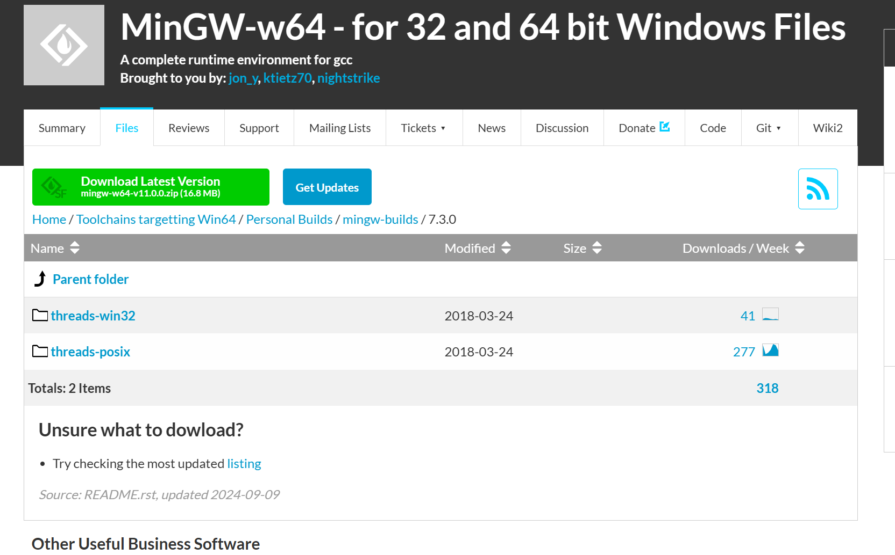
win-thread使用windows thread api，posix-thread则是pthread可使用std::thread。不确定用哪个的话可以用posi-thread，移植性更好。
- sjlj或seh
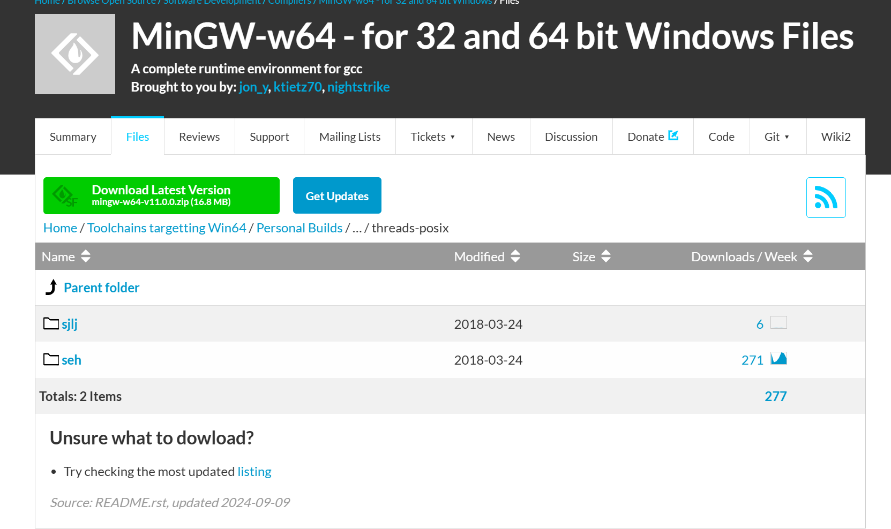
使用差距不大，seh下载的人多，就下seh吧，如果想了解二者区别请自行查询。
- 解压
解压后会看到类似如下结构，把bin的路径放到环境变量中
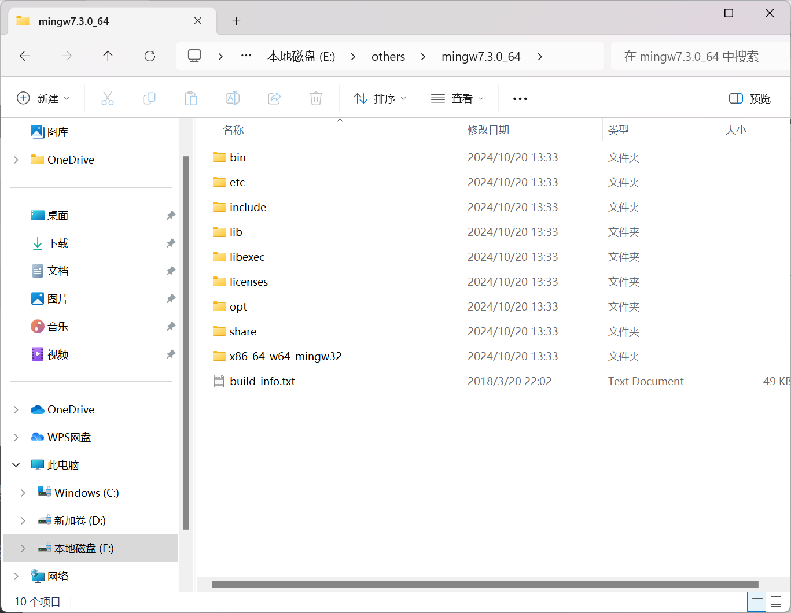
- 环境变量
如果你和我一样之前有其他的mingw编译器，可以像我一样直接在后面乱输几个字符破坏原有路径，这样之后恢复比较方便。
另一个方法是把新的环境变量放到旧的上面，环境变量是从上到下依次寻找的，找到目标后就会结束，所以如果多个环境变量同时能对应到目标路径时，最靠上的才生效。
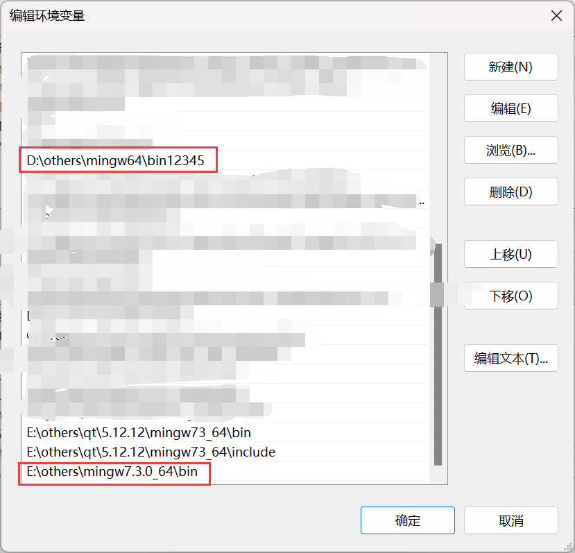
CMake编译
正常新建build文件夹进行编译
1 | mkdir build |
因为图形化问题，cmake不会生成makefile，第一次cmake需要执行如下指令
1 | cmake .. -G "Unix Makefiles" |
之后就能正常：
1 | cmake .. |
其他注意事项
- 配置完环境变量后需要点击确定按钮才能生效。
- 配置完环境变量后需要重启vscode或重启已经开启的terminal才能使新环境变量生效。
- 已经make失败后再修改环境变量，或者已经cmake后发现没有makefile，都需要将build下所有内容全部清空（也就是清空make cache和cmake cache），重新执行
cmake .. -G "Unix Makefiles"和make才行。
小小demo
1 | ├─build |
c.cpp：
1 |
|
CMakeLists：
1 | cmake_minimum_required(VERSION 3.8) |
第一次编译并执行
1 | mkdir build |